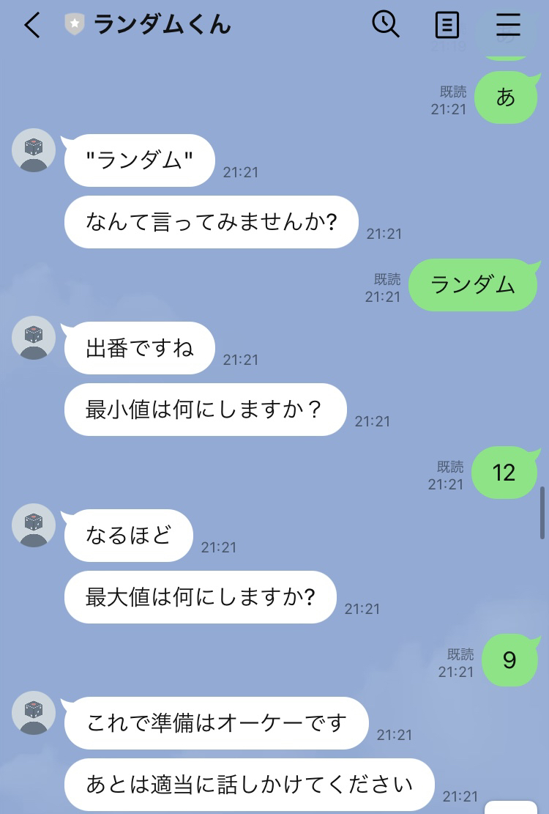
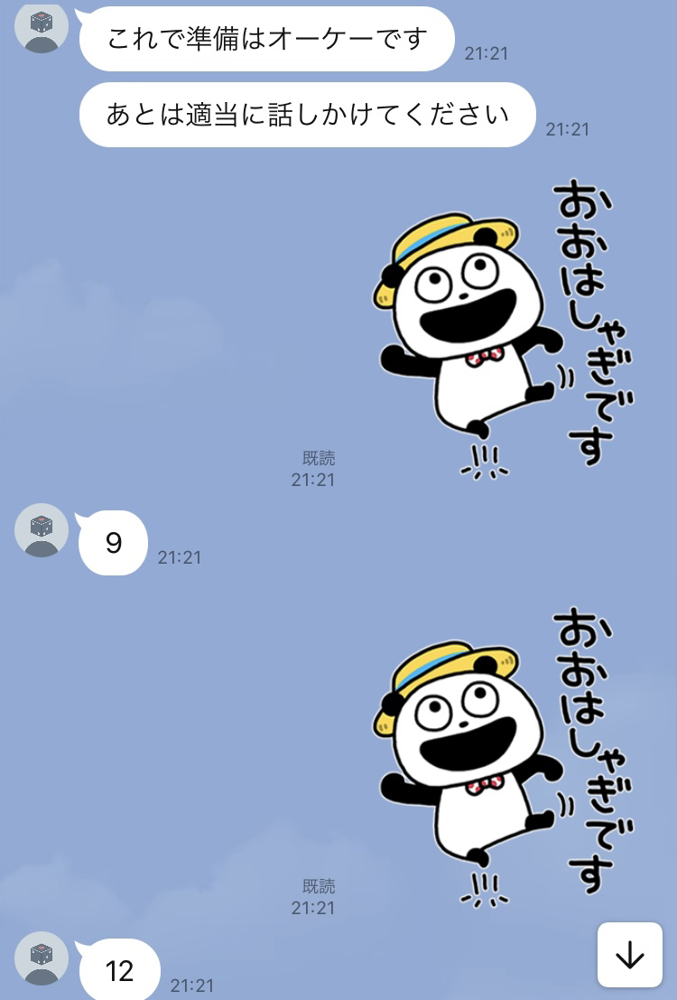
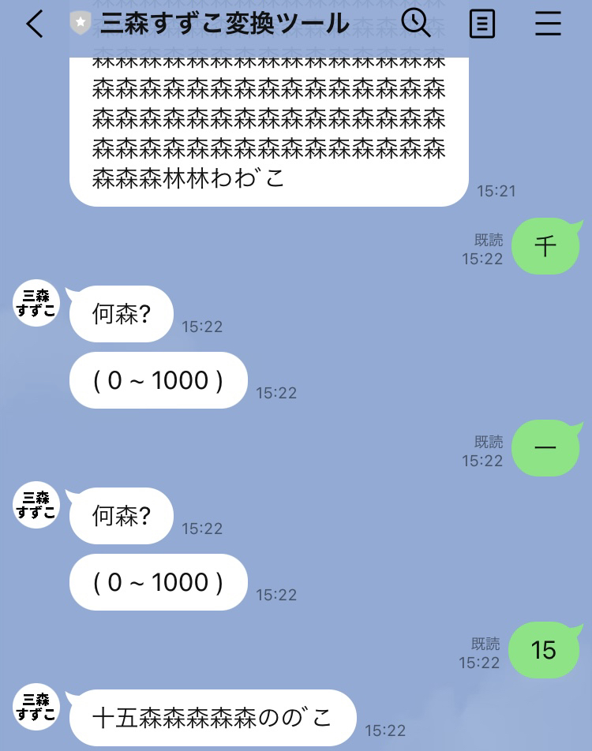
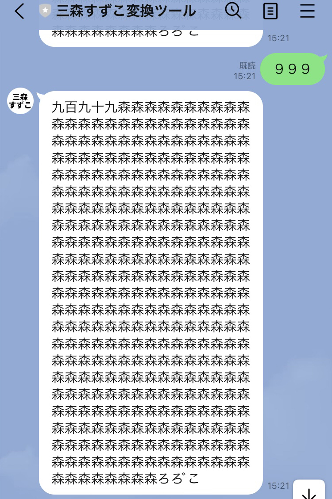
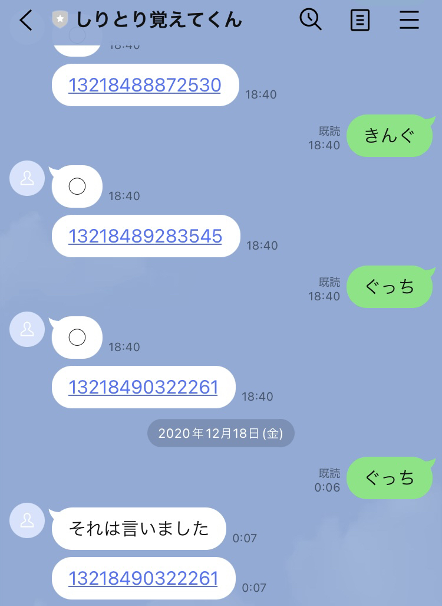
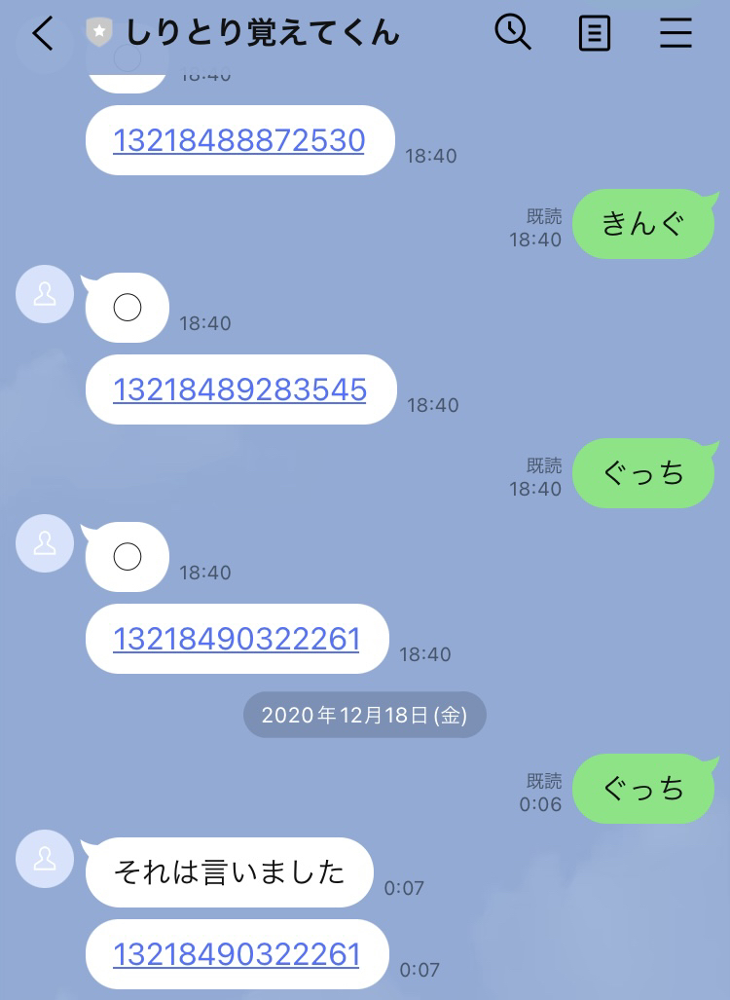

奥山 蛸之助のLINEbot
Pythonで制作したLINEbotを一般公開していましたが、サーバ維持費の関係から現在は全て停止しております。
| ランダムくん |



|
ボット受け答えすることで任意に設定した範囲での乱数を生成することができます。「乱数」という言葉を含めたメッセージを送ることで乱数生成の準備をはじめます。
最小値と最大値を答えたら設定完了です。
その後はメッセージ(スタンプ含む)を送るたび指定された範囲の乱数を生成します。
「リセット」を含めたメッセージを送ると、今の乱数設定を破棄し最初の状態に戻ります。
|
|---|---|---|
| 三森すずこ生成ツール |   |
ボットから「何森？」と聞かれるので、作りたい三森すずこの数値(0~1000)を送信することで任意の三森すずこを生成できます。
※ webサイト化予定
1 → 一木さざこ
3 → 三森すずこ
6 → 6森森ただこ
|
| しりとり覚えてくん |
 

|
メッセージを送るとその言葉を覚えてくれます。覚える時に覚えたIDを教えてくれ、同じ言葉を送るといつ送られたものか教えてくれます。
|